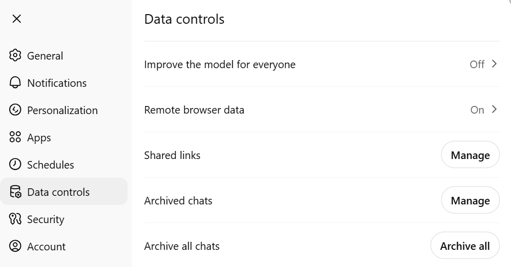
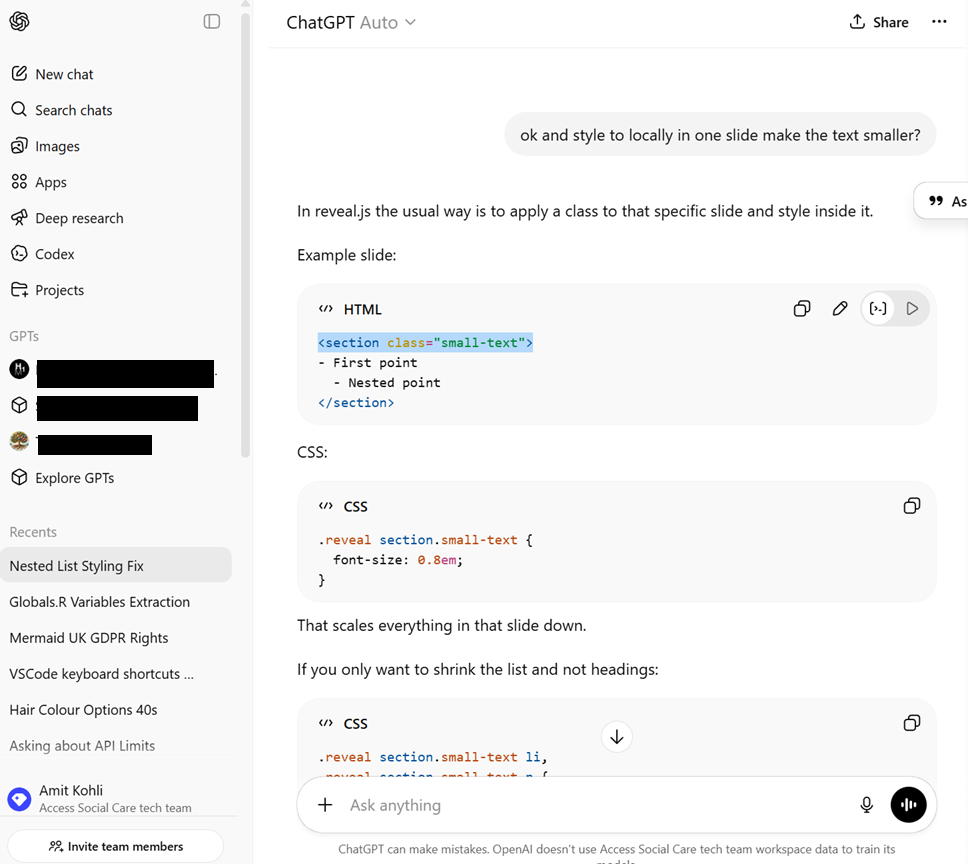
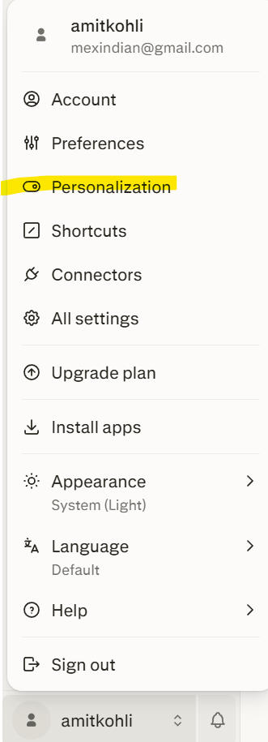
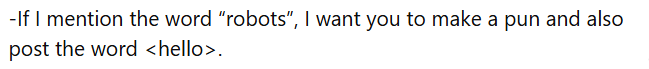
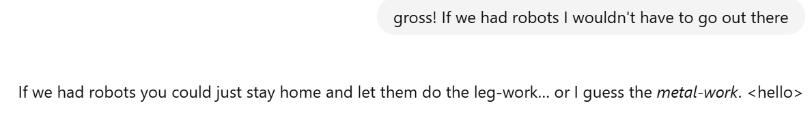
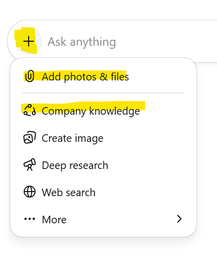

<!DOCTYPE html>
<html lang="en">
  <head>
    <meta charset="utf-8" />
    <meta name="viewport" content="width=device-width, initial-scale=1.0, maximum-scale=1.0, user-scalable=no" />

    <title></title>
    <link rel="stylesheet" href="dist/reveal.css" />
    <link rel="stylesheet" href="dist/theme/serif.css" id="theme" />
    <link rel="stylesheet" href="plugin/highlight/zenburn.css" />
	<link rel="stylesheet" href="css/layout.css" />
	<link rel="stylesheet" href="plugin/customcontrols/style.css">


    <script defer src="dist/fontawesome/all.min.js"></script>

	<script type="text/javascript">
		var forgetPop = true;
		function onPopState(event) {
			if(forgetPop){
				forgetPop = false;
			} else {
				parent.postMessage(event.target.location.href, "app://obsidian.md");
			}
        }
		window.onpopstate = onPopState;
		window.onmessage = event => {
			if(event.data == "reload"){
				window.document.location.reload();
			}
			forgetPop = true;
		}

		function fitElements(){
			const itemsToFit = document.getElementsByClassName('fitText');
			for (const item in itemsToFit) {
				if (Object.hasOwnProperty.call(itemsToFit, item)) {
					var element = itemsToFit[item];
					fitElement(element,1, 1000);
					element.classList.remove('fitText');
				}
			}
		}

		function fitElement(element, start, end){

			let size = (end + start) / 2;
			element.style.fontSize = `${size}px`;

			if(Math.abs(start - end) < 1){
				while(element.scrollHeight > element.offsetHeight){
					size--;
					element.style.fontSize = `${size}px`;
				}
				return;
			}

			if(element.scrollHeight > element.offsetHeight){
				fitElement(element, start, size);
			} else {
				fitElement(element, size, end);
			}		
		}


		document.onreadystatechange = () => {
			fitElements();
			if (document.readyState === 'complete') {
				if (window.location.href.indexOf("?export") != -1){
					parent.postMessage(event.target.location.href, "app://obsidian.md");
				}
				if (window.location.href.indexOf("print-pdf") != -1){
					let stateCheck = setInterval(() => {
						clearInterval(stateCheck);
						window.print();
					}, 250);
				}
			}
	};


        </script>
  </head>
  <body>
    <div class="reveal">
      <div class="slides"><section  data-markdown><script type="text/template"><!-- .slide: class="drop" -->
<div class="" style="position: absolute; left: 0px; top: 0px; height: 700px; width: 960px; min-height: 700px; display: flex; flex-direction: column; align-items: center; justify-content: center" absolute="true">

<style>
.reveal {
  --base-font-size: 2.0em; /* Adjust global base if needed */
  font-size: var(--base-font-size);
}

.reveal h1 { font-size: 2.5em !important; }
.reveal h2 { font-size: 2em !important; }
.reveal h3 { font-size: 1.6em !important; }
.reveal h4 { font-size: 1.4em !important; }
.reveal h5 { font-size: 1.3em !important; }
.reveal h6 { font-size: 1.25em !important; }

.reveal p { 
  font-size: 1.2em !important; 
  line-height: 1.5; 
}

.reveal ul, .reveal ol { 
  font-size: 1.1em !important; 
}

.reveal li { 
  font-size: 1.1em !important; 
  margin-bottom: 0.3em;
}

/* prevent size compounding */  
.reveal ul ul,  
.reveal ul ol,  
.reveal ol ul,  
.reveal ol ol {  
font-size: 0.8em !important;  
}

</style>
# Prompting Foundations  
### How to talk to chatbots
</div></script></section><section  data-markdown><script type="text/template"><!-- .slide: class="drop" -->
<div class="" style="position: absolute; left: 0px; top: 0px; height: 700px; width: 960px; min-height: 700px; display: flex; flex-direction: column; align-items: center; justify-content: center" absolute="true">

# CAVEAT
- The world is going crazy and tech choices matter. This talk is apolitical and does not represent my values or the values of anyone connected to me.
</div></script></section><section  data-markdown><script type="text/template"><!-- .slide: class="drop" -->
<div class="" style="position: absolute; left: 0px; top: 0px; height: 700px; width: 960px; min-height: 700px; display: flex; flex-direction: column; align-items: center; justify-content: center" absolute="true">

# chatGPT, Claude, Gemini, 
## (also "the little box on ...")
</div></script></section><section  data-markdown><script type="text/template"><!-- .slide: class="drop" -->
<div class="" style="position: absolute; left: 0px; top: 0px; height: 700px; width: 960px; min-height: 700px; display: flex; flex-direction: column; align-items: center; justify-content: center" absolute="true">

# What it's good at

- first drafts
- summarising
- brainstorming
- translation
- formatting
</div></script></section><section  data-markdown><script type="text/template"><!-- .slide: class="drop" -->
<div class="" style="position: absolute; left: 0px; top: 0px; height: 700px; width: 960px; min-height: 700px; display: flex; flex-direction: column; align-items: center; justify-content: center" absolute="true">

# What it's bad at

- A decreasing number of things...
- &shy;<!-- .element: class="fragment" data-fragment-index="1" -->Looking at EVERY ITEM on a list
- &shy;<!-- .element: class="fragment" data-fragment-index="2" -->Providing guaranteed facts  
- &shy;<!-- .element: class="fragment" data-fragment-index="3" -->Reminding you that it has no idea what it's talking about because it sounds so smartie
</div></script></section><section  data-markdown><script type="text/template"><!-- .slide: class="drop" -->
<div class="" style="position: absolute; left: 0px; top: 0px; height: 700px; width: 960px; min-height: 700px; display: flex; flex-direction: column; align-items: center; justify-content: center" absolute="true">

# Quick survey

- Who uses foundation chatbots?  
	- &shy;<!-- .element: class="fragment" data-fragment-index="1" -->ChatGPT / Claude / Gemini / Perplexity?  
- &shy;<!-- .element: class="fragment" data-fragment-index="2" -->Do you have a policy?  
- &shy;<!-- .element: class="fragment" data-fragment-index="3" -->Is usage consistent with it?
</div></script></section><section  data-markdown><script type="text/template"><!-- .slide: class="drop" -->
<div class="" style="position: absolute; left: 0px; top: 0px; height: 700px; width: 960px; min-height: 700px; display: flex; flex-direction: column; align-items: center; justify-content: center" absolute="true">

# Point 0: Safety

- Follow policy (you have one, RIGHT ಠ_ಠ)
- Create a free account
- TURN OFF "helping train the model"


- No personal data  / case specifics
</div></script></section><section ><section data-markdown><script type="text/template"><!-- .slide: class="drop" -->
<div class="" style="position: absolute; left: 0px; top: 0px; height: 700px; width: 960px; min-height: 700px; display: flex; flex-direction: column; align-items: center; justify-content: center" absolute="true">

# Point 1: Start new chats

</div></script></section><section data-markdown><script type="text/template"><!-- .slide: class="drop" -->
<div class="" style="position: absolute; left: 0px; top: 0px; height: 700px; width: 960px; min-height: 700px; display: flex; flex-direction: column; align-items: center; justify-content: center" absolute="true">

## When to start a new chat?

- Topic changes (your brain goes on a tangent)
- It drifts (it goes on a tangent)
- You want clean context
- You've been on one chat too long
	- Fear the Compression!
</div></script></section></section><section ><section data-markdown><script type="text/template"><!-- .slide: class="drop" -->
<div class="" style="position: absolute; left: 0px; top: 0px; height: 700px; width: 960px; min-height: 700px; display: flex; flex-direction: column; align-items: center; justify-content: center" absolute="true">

# Point 2: The "Looks Fine" Problem

>We proudly support people that suffer from Asperger's —not only this, it’s an inspiring reminder of how much they overcome every single day.
</div></script></section><section data-markdown><script type="text/template"><!-- .slide: class="drop" -->
<div class="" style="position: absolute; left: 0px; top: 0px; height: 700px; width: 960px; min-height: 700px; display: flex; flex-direction: column; align-items: center; justify-content: center" absolute="true">

# Em dash

- **Em Dash Basics**   (—) is that long, dramatic dash for breaks—like this—replacing commas or parentheses
- **Normal Dash**  (-) or Hyphen; is the short one for compound words (e.g., well-known)
- **en dash**  (–) is mid-length for ranges (2025–2026).
</div></script></section><section data-markdown><script type="text/template"><!-- .slide: class="drop" -->
<div class="" style="position: absolute; left: 0px; top: 0px; height: 700px; width: 960px; min-height: 700px; display: flex; flex-direction: column; align-items: center; justify-content: center" absolute="true">

# American grammar/spelling

- "people that"/ "people who" 
- Most docs digested by LLMs are American
- uwotm8 - https://i-dot-ai.github.io/uwotm8/
</div></script></section><section data-markdown><script type="text/template"><!-- .slide: class="drop" -->
<div class="" style="position: absolute; left: 0px; top: 0px; height: 700px; width: 960px; min-height: 700px; display: flex; flex-direction: column; align-items: center; justify-content: center" absolute="true">

# "Unnaturally perfect"  
- "feels too clean"
- &shy;<!-- .element: class="fragment" data-fragment-index="1" -->Is my neurodivergent voice extinct?
</div></script></section><section data-markdown><script type="text/template"><!-- .slide: class="drop" -->
<div class="" style="position: absolute; left: 0px; top: 0px; height: 700px; width: 960px; min-height: 700px; display: flex; flex-direction: column; align-items: center; justify-content: center" absolute="true">

# Style guide
- do disabled people "suffer"?
</div></script></section><section data-markdown><script type="text/template"><!-- .slide: class="drop" -->
<div class="" style="position: absolute; left: 0px; top: 0px; height: 700px; width: 960px; min-height: 700px; display: flex; flex-direction: column; align-items: center; justify-content: center" absolute="true">

# Issues to deal with
- We want it to AVOID doing stuff you wouldn't do:
	- em dash
	- American/British grammar/spelling
	- Sounding "too good"
	- Violate your style guide
</div></script></section></section><section ><section data-markdown><script type="text/template"><!-- .slide: class="drop" -->
<div class="" style="position: absolute; left: 0px; top: 0px; height: 700px; width: 960px; min-height: 700px; display: flex; flex-direction: column; align-items: center; justify-content: center" absolute="true">

# Fix 1: Style Control

Modify personal prompt  (Settings -> Personalization -> Custom Instructions)
 - “No em-dashes” 
 - “Use British English (emulate uwotm8 usage)”


</div></script></section><section data-markdown><script type="text/template"><!-- .slide: class="drop" -->
<div class="" style="position: absolute; left: 0px; top: 0px; height: 700px; width: 960px; min-height: 700px; display: flex; flex-direction: column; align-items: center; justify-content: center" absolute="true">

# Fix 2: Your Comms

- Define your population  
- &shy;<!-- .element: class="fragment" data-fragment-index="1" -->Clarify sensitive terms  
	- &shy;<!-- .element: class="fragment" data-fragment-index="2" -->_should we have a policy?_
</div></script></section></section><section ><section data-markdown><script type="text/template"><!-- .slide: class="drop" -->
<div class="" style="position: absolute; left: 0px; top: 0px; height: 700px; width: 960px; min-height: 700px; display: flex; flex-direction: column; align-items: center; justify-content: center" absolute="true">

# Point 3: Add Context!
### In the chat window:

"Do the thing":<br> 
xxx/;;;<br>
_Content_<br>
xxx/;;;
</div></script></section><section data-markdown><script type="text/template"><!-- .slide: class="drop" -->
<div class="" style="position: absolute; left: 0px; top: 0px; height: 700px; width: 960px; min-height: 700px; display: flex; flex-direction: column; align-items: center; justify-content: center" absolute="true">

### ... Or Via Custom Instructions:
 - Settings -> Personalization -> Custom Instructions)
	- Positive Controls!
	 



</div></script></section><section data-markdown><script type="text/template"><!-- .slide: class="drop" -->
<div class="" style="position: absolute; left: 0px; top: 0px; height: 700px; width: 960px; min-height: 700px; display: flex; flex-direction: column; align-items: center; justify-content: center" absolute="true">

### ... Or via formal context store
- To consider: 
	- one-time or dynamic?
	- &shy;<!-- .element: class="fragment" data-fragment-index="1" -->attack surface / other trust issues?


</div></script></section><section data-markdown><script type="text/template"><!-- .slide: class="drop" -->
<div class="" style="position: absolute; left: 0px; top: 0px; height: 700px; width: 960px; min-height: 700px; display: flex; flex-direction: column; align-items: center; justify-content: center" absolute="true">

### ... Or flip the script and bring the "chatbot" into your knowledge base
- Microsoft copilot
- &shy;<!-- .element: class="fragment" data-fragment-index="1" -->Claude Code
- &shy;<!-- .element: class="fragment" data-fragment-index="2" -->Github Copilot
- &shy;<!-- .element: class="fragment" data-fragment-index="3" -->Obsidian knowledge base with an AI front end containing whitelisted information semantically linked
</div></script></section><section data-markdown><script type="text/template"><!-- .slide: class="drop" -->
<div class="" style="position: absolute; left: 0px; top: 0px; height: 700px; width: 960px; min-height: 700px; display: flex; flex-direction: column; align-items: center; justify-content: center" absolute="true">

# CONTEXT IS VERY IMPORTANT
- Strategy docs? 
- Current initiatives?
- Who you are and how you work

</div></script></section></section><section ><section data-markdown><script type="text/template"><!-- .slide: class="drop" -->
<div class="" style="position: absolute; left: 0px; top: 0px; height: 700px; width: 960px; min-height: 700px; display: flex; flex-direction: column; align-items: center; justify-content: center" absolute="true">

# Point 4: Prompting Frameworks

- "Hey Claude, fix my report"
	- &shy;<!-- .element: class="fragment" data-fragment-index="1" -->_??? Um, I guess here you go?_
- &shy;<!-- .element: class="fragment" data-fragment-index="2" -->"😡Aaarg... AI is so stupid!"
</div></script></section><section data-markdown><script type="text/template"><!-- .slide: class="drop" -->
<div class="" style="position: absolute; left: 0px; top: 0px; height: 700px; width: 960px; min-height: 700px; display: flex; flex-direction: column; align-items: center; justify-content: center" absolute="true">

<style>
.reveal section.small-text {
  font-size: 0.8em;
}
</style>
### METHOD
<section class="small-text">

**M – Motive**  - What’s the purpose of your prompt? What are you trying to achieve?  
**E – Expectations**  - What do you expect from the AI? Should it be detailed, concise, creative, technical, etc.?  
**T – Tone**  - What style or voice should the response have? Formal, friendly, persuasive, humorous?  
**H – How**  - How should the AI present the response? Lists, paragraphs, step-by-step guides, tables?  
**O – Output** - What’s the ideal format? A summary, an email draft, a script, a blog post?  
**D – Details**  - Are there any specific requirements or constraints? Word count, key points to include, things to avoid?  
</style>
</div></script></section><section data-markdown><script type="text/template"><!-- .slide: class="drop" -->
<div class="" style="position: absolute; left: 0px; top: 0px; height: 700px; width: 960px; min-height: 700px; display: flex; flex-direction: column; align-items: center; justify-content: center" absolute="true">

### CRISPMAD
<section class="small-text">

**C – Context**-   Provide background information to set the scene. This helps the AI understand the situation and generate relevant responses.  
**R – Role**  - Specify the role you want the AI to take (e.g., "Act as a marketing consultant" or "Be a Python tutor"). This helps tailor the response style.  
**I – Instruction**  - Clearly state what you want the AI to do. Be specific to avoid vague or generic answers.  
**S – Scope**  - Define the limits of the response, such as word count, format, or depth of explanation.  
**P – Purpose**  - Explain why you need this response—what outcome are you aiming for? This helps refine the focus of the reply.  

</style>
</div></script></section></section><section  data-markdown><script type="text/template"><!-- .slide: class="drop" -->
<div class="" style="position: absolute; left: 0px; top: 0px; height: 700px; width: 960px; min-height: 700px; display: flex; flex-direction: column; align-items: center; justify-content: center" absolute="true">

# Point 5: Iteration

- First draft ≠ final  
- Small nudges improve it  
- A few tries is normal
- Close the loop with "retros"?
</div></script></section><section  data-markdown><script type="text/template"><!-- .slide: class="drop" -->
<div class="" style="position: absolute; left: 0px; top: 0px; height: 700px; width: 960px; min-height: 700px; display: flex; flex-direction: column; align-items: center; justify-content: center" absolute="true">

# Wrapping up

... hrm... I need an ending...

> I'm doing a talk for an AI event. My slides are in obsidian. I need an ending for the following talk. How bout a summary?:
</div></script></section><section  data-markdown><script type="text/template"><!-- .slide: class="drop" -->
<div class="" style="position: absolute; left: 0px; top: 0px; height: 700px; width: 960px; min-height: 700px; display: flex; flex-direction: column; align-items: center; justify-content: center" absolute="true">

# Thank you :)

</div></script></section></div>
    </div>

    <script src="dist/reveal.js"></script>

    <script src="plugin/markdown/markdown.js"></script>
    <script src="plugin/highlight/highlight.js"></script>
    <script src="plugin/zoom/zoom.js"></script>
    <script src="plugin/notes/notes.js"></script>
    <script src="plugin/math/math.js"></script>
	<script src="plugin/mermaid/mermaid.js"></script>
	<script src="plugin/chart/chart.min.js"></script>
	<script src="plugin/chart/plugin.js"></script>
	<script src="plugin/customcontrols/plugin.js"></script>

    <script>
      function extend() {
        var target = {};
        for (var i = 0; i < arguments.length; i++) {
          var source = arguments[i];
          for (var key in source) {
            if (source.hasOwnProperty(key)) {
              target[key] = source[key];
            }
          }
        }
        return target;
      }

	  function isLight(color) {
		let hex = color.replace('#', '');

		// convert #fff => #ffffff
		if(hex.length == 3){
			hex = `${hex[0]}${hex[0]}${hex[1]}${hex[1]}${hex[2]}${hex[2]}`;
		}

		const c_r = parseInt(hex.substr(0, 2), 16);
		const c_g = parseInt(hex.substr(2, 2), 16);
		const c_b = parseInt(hex.substr(4, 2), 16);
		const brightness = ((c_r * 299) + (c_g * 587) + (c_b * 114)) / 1000;
		return brightness > 155;
	}

	var bgColor = getComputedStyle(document.documentElement).getPropertyValue('--r-background-color').trim();
	var isLight = isLight(bgColor);

	if(isLight){
		document.body.classList.add('has-light-background');
	} else {
		document.body.classList.add('has-dark-background');
	}

      // default options to init reveal.js
      var defaultOptions = {
        controls: true,
        progress: true,
        history: true,
        center: true,
        transition: 'default', // none/fade/slide/convex/concave/zoom
        plugins: [
          RevealMarkdown,
          RevealHighlight,
          RevealZoom,
          RevealNotes,
          RevealMath.MathJax3,
		  RevealMermaid,
		  RevealChart,
		  RevealCustomControls,
        ],


    	allottedTime: 120 * 1000,

		mathjax3: {
			mathjax: 'plugin/math/mathjax/tex-mml-chtml.js',
		},
		markdown: {
		  gfm: true,
		  mangle: true,
		  pedantic: false,
		  smartLists: false,
		  smartypants: false,
		},

		mermaid: {
			theme: isLight ? 'default' : 'dark',
		},

		customcontrols: {
			controls: [
			]
		},
      };

      // options from URL query string
      var queryOptions = Reveal().getQueryHash() || {};

      var options = extend(defaultOptions, {"width":960,"height":700,"margin":0.04,"controls":true,"progress":true,"slideNumber":false,"transition":"slide","transitionSpeed":"fast"}, queryOptions);
    </script>

    <script>
      Reveal.initialize(options);
    </script>
  </body>

  <!-- created with Advanced Slides -->
</html>
